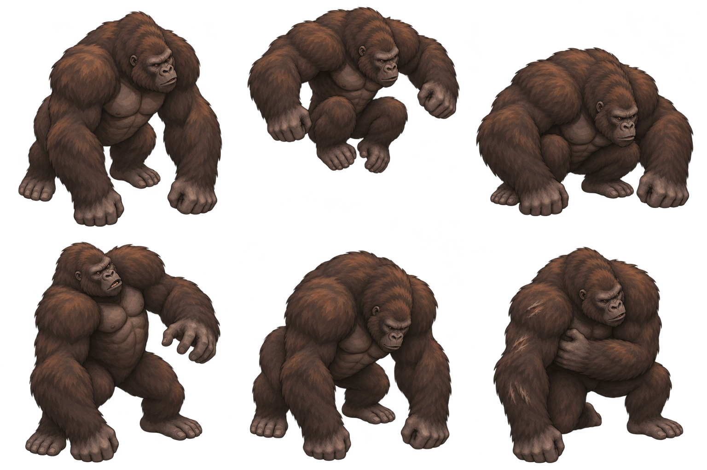
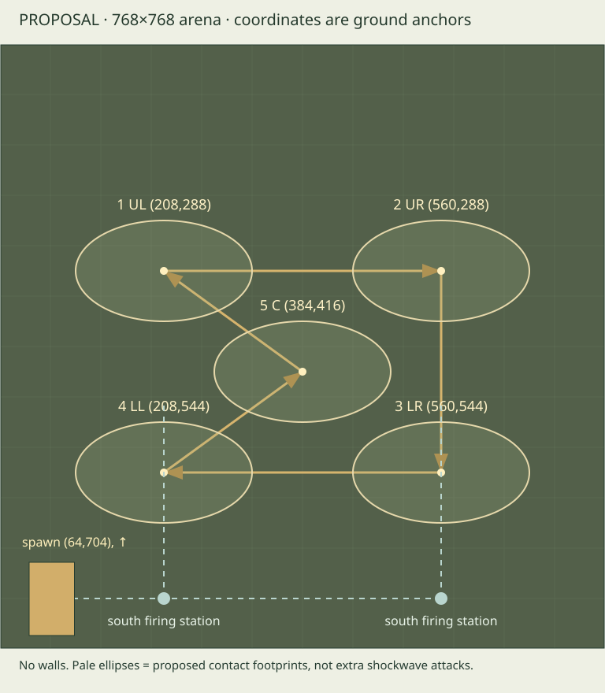

Colossus · concept-to-sprite assessment
Original one-view study; not accepted production art. No Level 2 gameplay, HP system or boss AI is implemented. Art, camera, facing coverage and balance remain proposals.
Original master · enlarged for inspection
The initial master only is ready for scale review. Other poses are a separate consistency gate, not inferred from this idle image.
Six pose concepts — not production frames

This sheet has transparency, but pose sizes and anchors are unregistered; its background/edge treatment still needs runtime cleanup checks. It is anatomy/state guidance, not an exported sprite atlas. Ground anchors, clean transparency and genuine side/back views still require authored production work.
Proposed ground anchors and lanes
